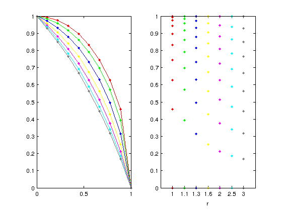

Centerfor2points
Computes the center of a circle that pass from two known points and a given radius.
This function is used for the distribution of the layers in the z direction. See the example in the help file
Version : 1.0
Author : George Kourakos
email: giorgk@gmail.com
web : http://groundwater.ucdavis.edu/msim
Date 18-Mar-2014
Department of Land Air and Water
University of California Davis
Contents
Usage
[c1 c2]=Centerfor2points(a,b,r)
Input
a : a 2D point b : a 2D point r : radius of the circle
Ouput
c1 : 1st center c2 : 2nd center
Example
Lets suppose that we want to distribute 10 layers so that the distance between the layers increases with depth.
Nlay = 10;
First we define the equation that describes a circle
zLayfnc = inline('yo+sqrt(r^2-(x-xo).^2)')
zLayfnc =
Inline function:
zLayfnc(r,x,xo,yo) = yo+sqrt(r^2-(x-xo).^2)
The function requires as arguments: a radious r, a coordinate x and the center of the circle xo, yo
Next we compute the center of the circle that goes through the points [0 0] and [1 1], while the radius while determine how the elevations are distributed. The next loop copmutes the layer distribution of different values
r = [1 1.1 1.3 1.6 2 2.5 3]; clr = [1 0 0; 0 1 0; 0 0 1; 1 1 0; 1 0 1; 0 1 1; 0.5 0.5 0.5]; for i = 1:length(r) [c1 ,~] = Centerfor2points([0 0], [1 1], r(i)); u = fliplr(zLayfnc(r(i), linspace(0,1,Nlay), c1(1), c1(2))); subplot(1,2,1);plot(linspace(0,1,Nlay),u,'.-','color',clr(i,:)); hold on subplot(1,2,2);plot(i,u,'.','color',clr(i,:)); hold on end subplot(1,2,1);axis([0 1 0 1]) subplot(1,2,2);axis([0 8 0 1]) subplot(1,2,2);set(gca,'XTick',1:7) subplot(1,2,2);set(gca,'XTickLabel',{'1', '1.1', '1.3', '1.6', '2', '2.5', '3'}) subplot(1,2,2);xlabel('r')
You can see that by changing the radius of the circle you get a different layer distribution. In essence the idea is to project uniformly distributed numbers on the cycle and change the distribution according to the radius.